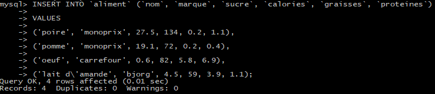

";" à la fin de chaque commande.C’est
une obligation pour signaler à SQL qu’on a terminé une instruction.

Permet créer une table qui va être composé de plusieurs caractéristiques, aussi appelées champs.Chacun de ces champs doit avoir un type, pour que MySQL comprenne à quoi “va ressembler” la donnée qui sera stockée dans ce champ. Par exemple, est-ce que le champ contiendra du texte, des chiffres, etc...
- id : Champ spécial obligatoire dans toutes les tables. Indique à MySQL que ce champ sera l'identifiant permettant d'identifier les objets.
- INTEGER (type) : Champ numérique sous forme de nombre entier.
- NOT NULL (option) : Ce champ ne peut pas être nul.
- AUTO_INCREMENT (option) : Ce champ sera créé par MySQL automatiquement, pas besoin de s'en soucier ! MySQL va utiliser l'id précédent et y ajouter +1 lors de l'ajout d'un nouvel objet.
- nom VARCHAR(100) (type) : Champ sous forme de texte, limité à 100 caractères.
- prenom VARCHAR(100) (type) : Champ sous forme de texte, limité à 100 caractères.
- email VARCHAR(255) (type) : Champ sous forme de texte, limité à 255 caractères.
- UNIQUE (option) : Ce champ ne peut pas avoir la même valeur en double.
- les Backtiks(``) pour les noms des tables/colonnes
- les Guillemets('') pour les valeurs de type TEXT ou VARCHAR
- et pas de Guillemets/Backticks pour les valeurs de type BOOLEAN, INTEGER et FLOAT
On insert ici plusieurs éléménts dans la table aliment en les séparant par une virgule. On peut faire la même chose bien sûr pour les utilisateurs.
